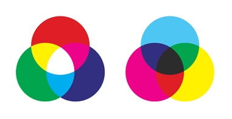
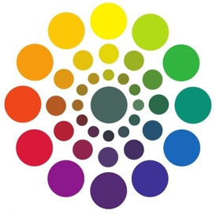
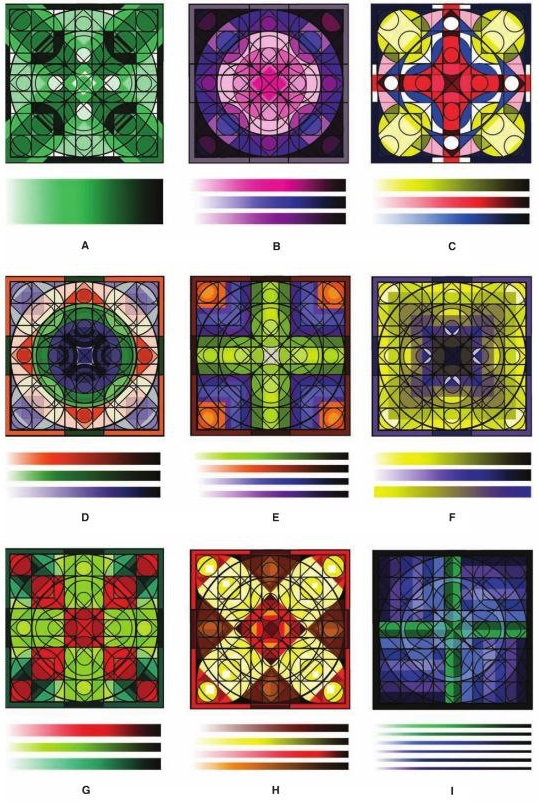

Ocvirk, Art Fundamentals
Art is the structured expression of a conceived image in terms of a given medium (Cheney)
Style: Expressive character unique to an individual (Mondrian and his influence on Rietveld and Schröder; Saint Laurent dresses)
Combination of all → organic unity (Rembrandt, Christ Presented
to the People)
Content = Subject in Conceptual art (Picasso, Bull)
Content = Form in Process art (Pollock, Blue Poles)
Subject can be remodeled by an Abstraction (Naturalism to Realism to
Semi-Abstraction to Objective Abstraction to NonObjective
Abstraction)
Some abstractions actually simplify (Picasso, Bull)
Space
| 2D | 3D |
|---|---|
| Plane | Planes |
| Decorative | Plastic Space |
| Positive(Field) | Negative Areas(Ground) |
| Illusive Depth | Actual Depth |
| Fake Mass | Mass (glyptic) |
3D Techniques
Subtraction > glyptic materials (stone, wood, cement, clay…)
Manipulation > Clay, wax, plaster -> further technical changes to
preserve them
Addition > assembling wood, plastic, metal with bolts, staplers,
screws, nails, rivets…
Substitution > casting after another technique has created the basic
form –> For Sculpture/Bas-relief, Architecture (Dyson, Lencioni
Residence; Gehry, Disney Concert Hall in LA), Metalwork,
Glass Design, Ceramics, Fiberwork, Product Design
The total appearance, organization or arrangement of all the visual elements, according to the principles that will develop unity in the artwork
Media and techniques organize the elements of art (line, texture,
color, shape, value) into Harmony and Variety
–> resulting in Balance, Proportion, Dominance, Movement,
Economy
–> creating Space and Visual Unity
Relationship and cohesion between elements, created by similarities.
Separation between elements.
Comparative relationship of size. When related to a standard, it’s equivalent to scale.
Golden Section (Polyclitus of Argos, Doryphoros, Nautilus
shell)
Mathematical proportions for the body in the Renaissance (Da Vinci,
Uomo Vitruviano)
Oversized relative to the rest (Piero Della Francesca, Madonna of
Mercy; Oldenburg, Saw, Sawing)
Separation between elements.
Separation between elements.
The path of a moving point made visible by constrasting the surrounding)
Describes motions (Richards, How to peel an orange); delimits objects by creating borders where texture and value don’t blend (Woods, Terrain 10; Kelly, Briar)
The visual abstraction of different wavelenghts of light, described with hue, intensity, and value.
Subtractive Color
Color created by reflection of the light not absorbed by pigments on
things
Red, blue, yellow are
the subtractive primaries
Violet, green, orange
are the subtractive secondaries
Additive Color
If colored light is used, rays can be combined just like they were
dissociated by a prism. Tech screens use this principle
Red, blue, green are
the additive primaries
Magenta, cyan, yellow
are the additive secondaries
 
The 12 colors of the wheel can be picked in triads,
tetrads, analogous and monochromatic groups,
warm and cool groups.
Each color can be described by 3 properties:
Kelly, Spectrum

Complementary colors create contrast, thus variety
Warm colors suggest closeness, and cold colors suggest distance.
(Cézanne, Apples and Biscuits. ~1880)
Placing warms in the back- and colds in the foreground creates a
decorative space (Gauguin, Vision after the Sermon)
CONTRAST -> readability: lines, shapes, textures, eye movement (using accents of the opposite key) -> drama vs harmony when high vs low (noir movie)
BEST MEDIA FOR VALUE 1 - Etching: acid on metal, ink fills the crevices, pressed on paper, depth of crevices determines value (Milton, Points of Departure) 2 - Woodcuts: carved on wood, printed on paper, closeness of determines value (Hokusai, The Great Wave) 3 - Lithography: oil crayon on limestone, lipophile ink determines value (Toulouse Latrec, Jane Avril) 4 - Screen printing: excluding areas to be coloured by blocking them, preparation of the screen determines value 5 - Photography: perfect depiction of light and shadow
PLASTICITY (spherical surfaces vs intersecting planes) - placement of the light source can increase or decrease it (light from a side vs light from the front) 1- Chiaroscuro + fading out further away objects (Masaccio, ) 2- Sfumato: smoke-like value edges, even softer and subtler (Da Vinci, Mona Lisa) 3- Tenebrism, extreme chiaroscuro -> maximum contrast to highlight things (Caravaggio, David and Goliath)
Joshua Booty, [3/21/23 7:35 PM] DECORATION -Ignoring light source -> no shadows -Middle ages and Asian tribes and a revive in the 19th century (Manet, The dead Toreador) -Value is worth being the focus in a work
VALUE PATTERN & COMPOSITION -Skeleton of the work guiding eye movement, emphasizing subject -Thumbnails to see different effects on the subject and viewer -Colour can distract from value pattern resulting in a bad picture(Greve, Monet’s Water III) -Closed-value composition confines values into shapes, easyly readable(Stevovich, Internet Café) -Open-value composition flowing values over shape boundaries, difficultly readable (McGraw, Mother and Child)
TYPES OF TEXTURE -Actual texture: touch = expected touch. Papier collé and afterwards Collage are expansions on it to add more texture. (Picasso made the first documented papier collé. He and Braque were cubists, an art movement developed around 1907-1912 with a focus of showing all planes of an object at the same time) -Simulated Texture: copying to perfection the texture of 3D onto 2D, creating illusion of touch, trompe l’oeil -Abstract Texture: often decorative, guiding eye movement, compositional tool -Invented Texture: have no source in reality, can give the viewer an impression of a known texture, decorative
TEXTURE AND PATTERN -tactile stimulation vs ornamental motives -both are created through contrasting values -a pattern can become a texture by entering the 3rd dimension -textures and pattern have an ideal distance to be seen from. Changing the distance influences the work through increasing/decreasing details
TEXTURE AND COMPOSITION -Texture can add emphasis and emotion and can create harmony, variety and interest -Dead areas can get lively -Too much texture can misguide eye movement
TEXTURE AND SPACE -Atmospheric perspective: blurred textured, low contrast in the back vs sharp textures, high contrast in the front
TEXTURE AND EXPRESSIVE CONTEN -Association of textures with emotions or experiences to enhance psychological reactions